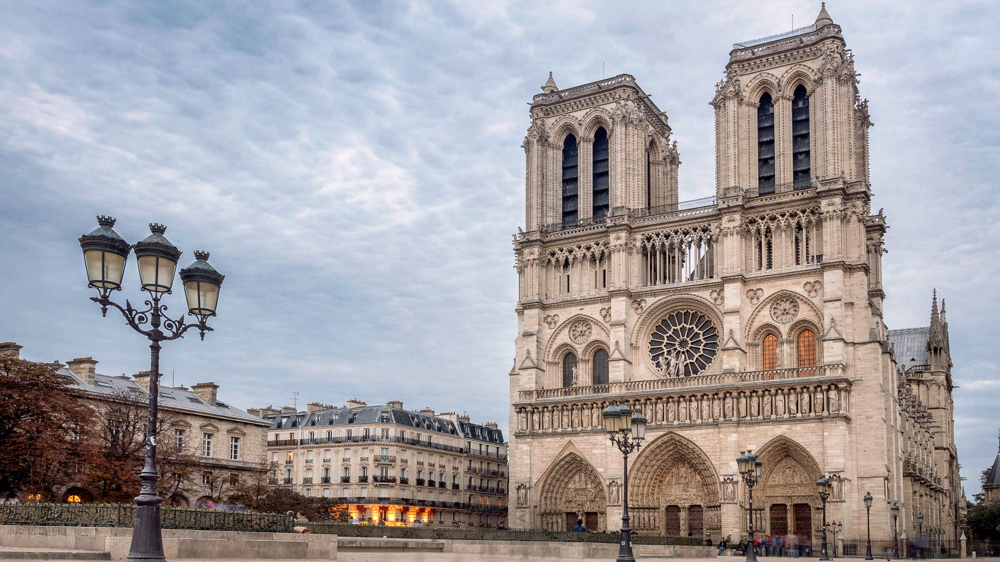

Париж (Paris) възбужда всички сетива,
настояващ да бъде видян, чут, докоснат, усетен на вкус и мирис.
От романтичната Сена до просторните многоцветни пейзажи
и изтънченото поведение на местните,
Париж е същината на всичко френско.
Вгледайте се в булевардите, обсипани с внушителни паметници,
велики произведения на изкуството и магически светлини.
Насладете се на невероятния вкус на сирената, шоколада, виното и морските деликатеси.
Почувстайте как вятърът гали лицето ви,
докато се движите с ролери покрай Бастилията
или усетете пристъпа на страх и еуфория на върха на Айфеловата кула.
Легендарният „град на светлините” или ”град на любовта”. Париж се смята за един от най-романтичните градове в света. Независимо дали сте художник, бизнесмен или турист, ще се насладите на дългите разходки от Монмартр до Картие. Минавайки през някои от най-изящните римски и средновековни паметници, рано или късно ще приключите в някое кафене на моста Пон Ньоф или в някой моден магазин в района на Маре.
Както Ню Йорк или Лондон, Париж е несравним. Веднага щом започнете да разглеждате най-посещавания град в света, ще се почувствате сякаш сте в музей на открито. Няма да видите много от келтските корени на столицата, но ще можете да се насладите на архитектурното великолепие, което ви връща в XII в., когато започва строежът на невероятната катедрала Ротердам. По това време мочурищата, формирали днешния квартал Маре, са отводнени и Сорбоната отваря врати. Величието на Париж е изградено през XVI в. по време на Ренесанса. Версай става резиденция на Луи XIV, чието разхищение слага началото на френската индустрия за луксозни стоки.

А през XIX в. Наполеон избрал Барон Хаусман да развие модерен Париж с дълги булеварди, красиви сгради и страхотни паркове, които правят града уникален и до днес. Нищо чудно, че Париж е известен с неокласическата си архитектура и влиянието си в модата и изкуствата. Разходка пеша е най-добрият начин да разгледате кварталите на града, неговите стари центрове, гробища, приютили за последно куп знаменитости, и красиви паркове. Пълно е с туристи, но градът е успял да запази автентичния си вид с места като Монмартр или Шанз Елизе. Тези, които обичат по-изисканите райони, трябва да отидат в Маре, Картие или Канал Сен Мартен. Ако харесвате галериите, музеите или известните кабарета като Фолие Берже, Париж има всичко, за да сбъдне мечтите ви.